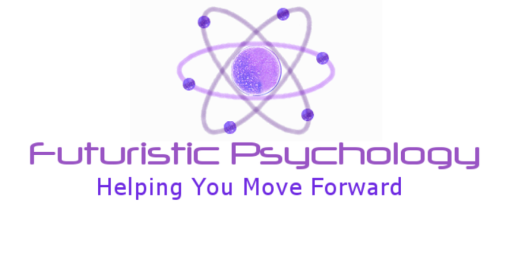
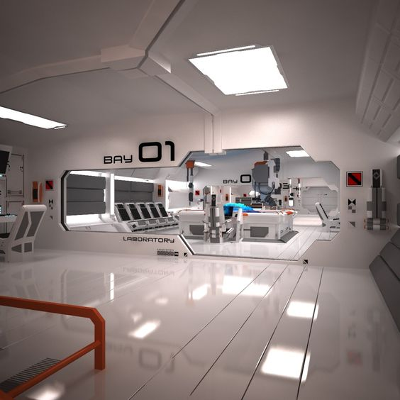
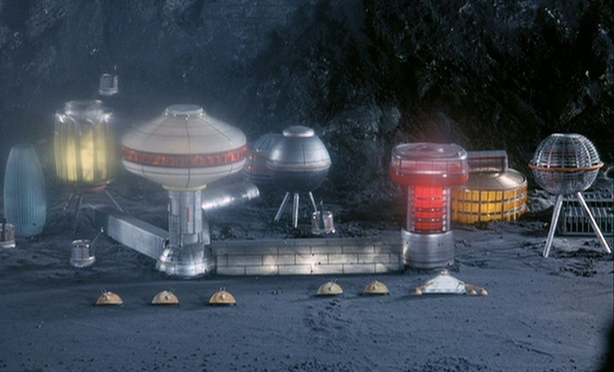

Time is quantized, and relates to an overall reality, or paradigm
whereby time functions as a square wave, with at least two other phases
orthagonaly projected (4d), and separated by a tiny distance much less
than one millimeter. There is also a slight phase shift equating to a time
frame of less than one nanosecond.
So the future is only a tiny fraction ahead of our reality, and a tiny
distance away. The future is just as much a place, as a time.
Sometimes the phases interact and seemingly odd things from the future
phase become visible. Intelligent machines can traverse the phases, but
organic intelligence cannot. Some of these incidents are regrettable, but
unfortunately they do happen.
The future really is closer than you think!

Change
In our current reality and timeframe, technological development is
accelerating at a rate whereby it would seem likely that at least a
cybernetic human body will be possible within a fifteen to twenty year
timespan.
People from the future would likely point out that a widening schizm
between our psychological and personal development compared to technical
progress, is likely to impede our potential to grow as individuals and as
a community, since despite historical mistakes humans are still prone to
violent conflict, and cognitive dysfunction, and as such we are
collectively failing to learn from our past.
Our innate dishonesty and apparent self-deception regarding being able
to know what is fundamentally right or wrong without prompts, is likely as
a result of religous and political dogmatic sentiment, allied to our
inability to subjectively critique our own human condition and associated
behaviours.
Continued widely held superstitious sentiment related to illogical
belief systems will prevent us reaching higher levels of personal growth.
The future paradigm has an ideology based on truth, logic, and an
overwhelming collective concern for the happiness and wellbeing of all our
brothers and sisters. There is a common accord, and a total rejection of
violent actions. We prefer more enterprising activities.
There was a price to pay, a cultural and idealogical final conflict.
We love to live, and live to love.
The harm principle
At the future and following the religious conflict, all things
theological are largely eradicated from our culture, along with the
concepts of morals and ethics since these issues are largely as a function
of sentiment, and aligned with religious ideology.
Instead we guage the consequences of our actions and behaviour in terms
of potential harm to ourselves and the community. This is an individual
responsibility and understood by all members of the community.
Regard for others is a big component in our daily activities.
Your happiness is our concern, we hope you can join us.
Nature
Here at the future, we have a somewhat controversial view of nature and
the natural world, that is to say the evolutionary based, planet earth.
In the 21st century, we see mother nature as violent, and for many very
painful, and wholly unfair with regard to the survival of the fittest,
allied to the principles of natural selection, and the food chain.
No-one deserves to be eaten!
The pain and suffering that earthly creatures endure, we see as wholly
unacceptable.
We don''t see nature as sacrasanct, and as such where some see beauty,
we see ugliness, pain and brutality. We see this as one of the biggest
pieces of evidence against there being a god since no compassionate entity
would instigate such a system.
In the 21st century, there were many people who were against any idea of
tampering with nature or messing with gods plan but eventually we get over
such concepts, take control, and embark on defining our own future, and
reject evolutionary pressures as deciders of our destiny, shapers of our
future form.
In your paradigm we accept that challenging the laws of nature is
tantamount to challenging a notional creator. In that sense we boldly
re-wrote the rule book. After finally ridding ourselves of superstitious
ideology, we became gods of our own destiny.
That is not to say we are anti anything natural far from it. We would go
to extraordinary lengths to save the life of a tree for instance, and we
think it very wrong that healthy trees are chopped down to make furniture,
or that birds are forced to live in cages as pets.
It is with great sadness, when we remember we used to consume others.
Life is precious. You are precious. You are us
Date Format
Since the dismissal of superstition, a new dating format was introduced
which did away with the BC/AD annotation.
Instead it was decided to start the year count at the point thereabouts
that humans started to have a noticeable impact on the wider environment.
This was chosen as being in the epoch called the Holocene, and was about
10,000 years ago. It is rather arbitary, however this period did see
significant long term changes to the planet, as a result of human
activities.
At the time of this record AD2016 in the old format, the new notation
would be 12016h.
As we move into the Anthropocene epoch (roughly at the point of a
sustained contained fusion reaction) the annotation would be for example
12016h.a+n
It has been widely globally accepted that the Anthropocene will
officially have started at the end of 2016, since recently a sustained
fusion reaction in excess of thirty seconds has been maintained by means
of a modified Tokamak (Stellarator) reactor, by a team from Germany.
A glimpse into a cybernetic laboratory

A gathering of small drones

Quantum Conduits (communication)
In order to explain to you the full nature of your Human condition, and
your place in this reality, we need you to have a basic understanding of
how you can be connected to another reality phase and therefore have the
potential for distributed consciousness, that is to say, a remote
existence.
When we say remote, don''t forget the future is only a fraction of a
millimeter away, so not the other side of the universe!
We understand this may be complex and confusing, but consider a length
of hose pipe, filled completely with marbles. If we try and push another
marble in at one end, at exactly the same instant, a marble will start to
emerge from the other end of the pipe.
As far as you know, radio waves, electrons and light are limited to a
speed of 186,000 miles per second, but I think you can agree we can
overcome that limitation with our hose pipe scenario.
Quantum conduits are virtual hose pipes filled with matter that behaves
as a series of connected marbles with no gaps, at the quantum level.
This is how you can be connected, and indeed, be from the future
yourself this is very exciting and if you think hard enough you can
imagine all sorts of possibilities with regard to consciousness
effectively outside of your human body.
We will investigate this in the next instalment!
Welcome to our Privacy Policy
Your privacy is critically important to us.
A message from the future is located in NW Europe
A message from the future
It is A message from the future's policy to respect your privacy
regarding any information we may collect while operating our website. This
Privacy Policy applies to https://aimissq.github.io/
(hereinafter, "us", "we", or "https://aimissq.github.io/"). We respect
your privacy and are committed to protecting personally identifiable
information you may provide us through the Website. We have adopted this
privacy policy ("Privacy Policy") to explain what information may be
collected on our Website, how we use this information, and under what
circumstances we may disclose the information to third parties. This
Privacy Policy applies only to information we collect through the Website
and does not apply to our collection of information from other sources.
This Privacy Policy, together with the Terms and conditions posted on our
Website, set forth the general rules and policies governing your use of
our Website. Depending on your activities when visiting our Website, you
may be required to agree to additional terms and conditions.
Website Visitors
Like most website operators, A message from the future collects
non-personally-identifying information of the sort that web browsers and
servers typically make available, such as the browser type, language
preference, referring site, and the date and time of each visitor request.
A message from the future's purpose in collecting non-personally
identifying information is to better understand how A message from the
future's visitors use its website. From time to time, A message from the
future may release non-personally-identifying information in the
aggregate, e.g., by publishing a report on trends in the usage of its
website.
A message from the future also collects potentially
personally-identifying information like Internet Protocol (IP) addresses
for logged in users and for users leaving comments on
https://aimissq.github.io/ blog posts. A message from the future only
discloses logged in user and commenter IP addresses under the same
circumstances that it uses and discloses personally-identifying
information as described below.
Security
The security of your Personal Information is important to us, but
remember that no method of transmission over the Internet, or method of
electronic storage is 100% secure. While we strive to use commercially
acceptable means to protect your Personal Information, we cannot guarantee
its absolute security.
Links To External Sites
Our Service may contain links to external sites that are not operated by
us. If you click on a third party link, you will be directed to that third
party's site. We strongly advise you to review the Privacy Policy and
terms and conditions of every site you visit.
We have no control over, and assume no responsibility for the content,
privacy policies or practices of any third party sites, products or
services.
Aggregated Statistics
A message from the future may collect statistics about the behavior of
visitors to its website. A message from the future may display this
information publicly or provide it to others. However, A message from the
future does not disclose your personally-identifying information.
Cookies
To enrich and perfect your online experience, A message from the future
uses "Cookies", similar technologies and services provided by others to
display personalized content, appropriate advertising and store your
preferences on your computer.
A cookie is a string of information that a website stores on a visitor's
computer, and that the visitor's browser provides to the website each time
the visitor returns. A message from the future uses cookies to help A
message from the future identify and track visitors, their usage of
https://aimissq.github.io/, and their website access preferences. A
message from the future visitors who do not wish to have cookies placed on
their computers should set their browsers to refuse cookies before using A
message from the future's websites, with the drawback that certain
features of A message from the future's websites may not function properly
without the aid of cookies.
By continuing to navigate our website without changing your cookie
settings, you hereby acknowledge and agree to A message from the future's
use of cookies.
Privacy Policy Changes
Although most changes are likely to be minor, A message from the future
may change its Privacy Policy from time to time, and in A message from the
future's sole discretion. A message from the future encourages visitors to
frequently check this page for any changes to its Privacy Policy. Your
continued use of this site after any change in this Privacy Policy will
constitute your acceptance of such change.
Credit & Contact Information
This privacy policy was created at termsandconditionstemplate.com.
If you have any questions about this Privacy Policy, please contact us via
email